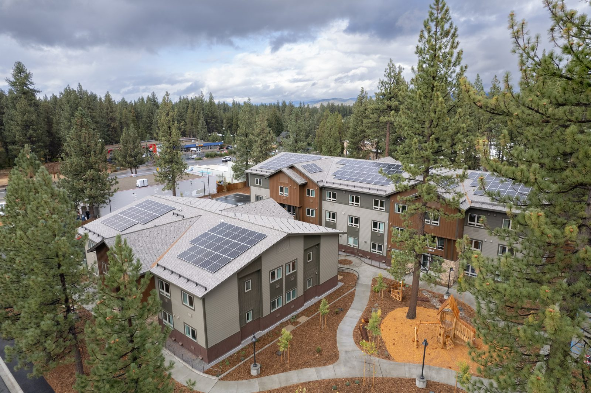

Lake Tahoe Regional Plan
Development Tracking
Lake Tahoe has long been a global leader in harmonizing the natural and human-made environments. The Tahoe Regional Planning Agency implements a unique and comprehensive approach to managing new development and redevelopment as outlined in the Lake Tahoe Regional Plan.
Adopted in 1987 and updated in 2012, the Regional Plan limits growth while strategically allowing development that meets environmental standards. Today, 90 percent of the Tahoe Basin is public land, which further reduces development potential and preserves sensitive lands.
Together TRPA's conservation programs and growth management system advance the region's environmental threshold goals and support community resilience.
Explore the dashboards below to see how much has been built, what still has development potential, and how Tahoe Basin development has changed over time.

The Tahoe Regional Plan caps the cumulative total of development that can occur in the basin. These dashboards show the live tally maintained by the Tahoe Regional Planning Agency.
For more on the program, see TRPA Development Rights or the Pool Balance Report on Lake Tahoe Info.
Checking data freshness…